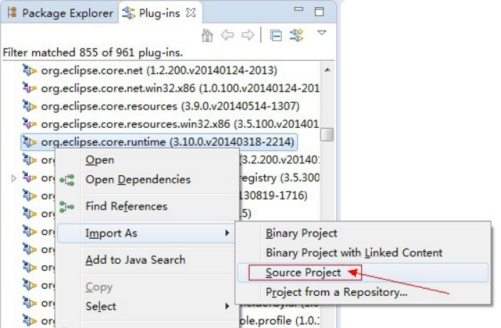
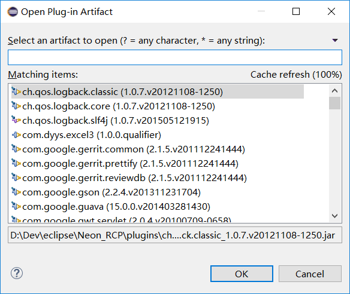

[TOC]
“Templates”向导页包含11个典型示例模板，清单如下： 1.Hello，World 2.Hello，World Command 3.ODA Data Source Designer（ODA数据源设计器示例） 4.ODA Data Source Runtime Driver（ODA数据源运行时驱动示例） 5.Plug-in with a multi-page editor多页编辑器示例） 6.Plug-in with a popup menu（弹出菜单示例） 7.Plug-in with a property page（属性页示例） 8.Plug-in with a view（自定义视图示例） 9.Plug-in with an editor（编辑器示例） 10.Plug-in with an incremental project builder（工程项目编译器示例） 11.Plug-in with sample help content（上下文帮助示例）
“Template Selection”向导页包含17典型示例模板（涉及16个扩展点），扩展点清单如下： 1.org.eclipse.core.resources.builders 2.org.eclipse.ui.navigator.CommonNavigator 3.org.eclipse.ui.decorators 4.org.eclipse.ui.editors 5.org.eclipse.ui.commands 6.org.eclipse.ui.actionSets 7.org.eclipse.help.toc 8.org.eclipse.ui.importWizards 9.org.eclipse.ui.newWizards 10.org.eclipse.ui.perspectives 11.org.eclipse.ui.popupMenus 12.org.eclipse.ui.PreferencePages 13.org.eclipse.ui.propertyPages 14.org.eclipse.ui.splashHandlers 15.org.eclipse.ui.intro.configExtension 16.org.eclipse.ui.views
“Extension Wizards”
在插件开发透视图中（Plug-in Development），默认有一个插件视图（Plug-ins），该视图用于呈现当前Eclipse开发环境下的插件清单，清单包含当前工作区（workspace）中已打开的插件工程项目。

启动Eclipse，通过File菜单的“Import…”菜单项调出导入向导。
Ctrl+Shift+A

flowable-designer 导入eclipse，eclipse必须安装 graphiti的0.13.2版本： http://archive.eclipse.org/graphiti/updates/0.13.2
Tycho则是一群Eclipse、OSGi插件开发人员受不了重复地配置类似的Maven pom.xml而创造出来的。Tycho大大简化了Eclipse、OSGi插件中的pom.xml，它实际上是一系列专用于build Eclipse插件和OSGi模块的maven插件的集合。
Tycho牛逼之处就在于它可以读懂这些metadata，这样程序员就不需要在pom文件里面重新定义一遍。不止如此，为了避免程序员乌龙地在MANIFEST文件和pom文件里面定义的依赖出现冲突，Tycho甚至规定所有的依赖必须定义于MANIFEST文件中（不然没法编译），出现在pom文件中的依赖一律直接被忽略。
为了优化对Eclipse插件和OSGi模块的build，Tycho提供了专门的packaging，用来处理专门的模块生命周期，最典型的比如eclipse-repository，配合tycho-p2-director-plugin，直接就可以读懂product文件，build整个Eclipse RCP的product。 PS: feature是插件的集合，我们在给Eclipse安装插件的时候往往安装的是feature，而不是安装一个个的plugin jar
例子： https://github.com/jsievers/tycho-demo
Building Java OSGi Project with Maven and Tycho Eclipse Tycho for building plug-ins, OSGi bundles and Eclipse applications - Tutorial - eclipse插件开发教程 - Eclipse IDE Plug-in Development: Plug-ins, Features, Update Sites and IDE Extensions
- [Eclipse RCP (Rich Client Platform) - Tutorial](https://www.vogella.com/tutorials/EclipseRCP/article.html)